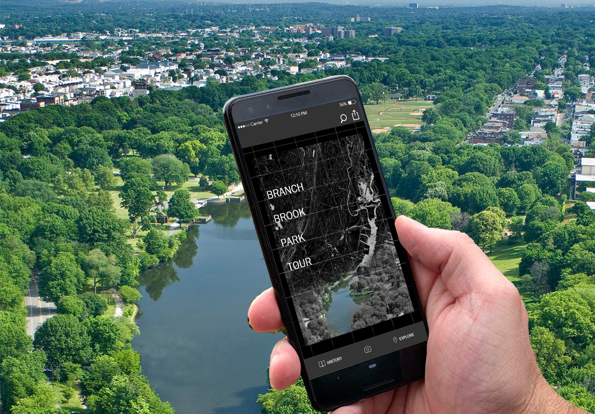
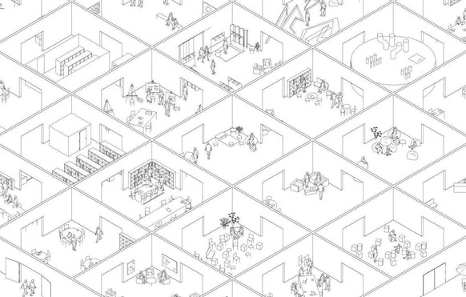

MOULI LUO
Freelancer Digital Designer
and Landscape Designer
ppppphis is a place holder for a brief intro of myself. about 4-5 lines. so I am just going to type some random things here. haha. this is a place holder for a brief intro of myself. about 4-5 lines. so I am just going to type some random things here. haha.
Digital Design
Landscape Design
Drawing Collection
About
Contact

Viewing Branch Brook Park: the History and Future of Landscape Representation
Using Branch Brook Park as an example, this thesis examines the initial historic representations of the Park, its documented changes over time, and representations that can expose the process to park visitors.
READ MORE

Viewing Branch Brook Park: the History and Future of Landscape Representation
Using Branch Brook Park as an example, this thesis examines the initial historic representations of the Park, its documented changes over time, and representations that can expose the process to park visitors.
READ MORE